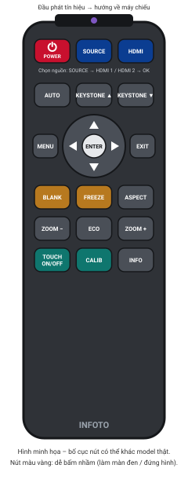
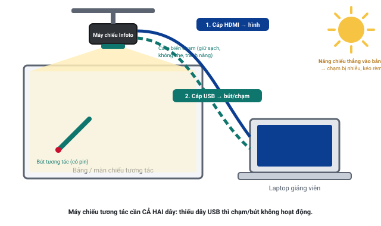

Máy chiếu tương tác Infoto
Model đang dùng tại trường: [MODEL]. Đây là máy chiếu gần / siêu gần, treo sát tường phía trên bảng, cho phép viết, chạm bằng bút hoặc ngón tay lên hình chiếu như bảng điện tử.
Lưu ý
Tên nút, thứ tự menu và ý nghĩa đèn báo dưới đây là phổ biến cho máy chiếu tương tác Infoto. Model thực tế có thể khác đôi chút – hãy đối chiếu với nhãn in trên remote và tài liệu đi kèm. Máy treo trên cao phía trên bảng nên mọi thao tác đều làm trên remote; không dùng nút trên thân máy. Remote hết pin → lấy pin dự phòng ở phòng nước giảng viên tự thay.
3 thao tác hay dùng nhất
- Bật máy: nhấn POWER trên remote 1 lần → đèn POWER nhấp nháy → sáng xanh ổn định sau 20–60 giây là sẵn sàng.
- Chọn HDMI: nhấn SOURCE (hoặc HDMI) → chọn HDMI 1 / HDMI 2 theo cổng đang cắm → nhấn OK.
- Dùng tương tác: cắm thêm dây USB tương tác vào laptop, đợi 10–30 giây, chạm thử; nếu lệch thì hiệu chỉnh (Calibration) – xem phần tương tác bên dưới.
Sơ đồ nút thường gặp trên remote

assets/img/.
Ý nghĩa các nút
- POWERBật / tắt máy. Tắt thường cần nhấn 2 lần (lần 2 để xác nhận).
- SOURCE / INPUTMở danh sách nguồn vào: HDMI 1, HDMI 2, VGA, USB… Chọn bằng ▲▼ rồi OK.
- HDMINhảy thẳng đến nguồn HDMI (nếu remote có).
- MENU / OK / EXITMở menu, xác nhận, thoát. Các mũi tên ▲▼◀▶ để di chuyển.
- AUTOTự căn hình (chủ yếu với cổng VGA). Với HDMI thường không cần.
- KEYSTONE ▲ / ▼Chỉnh méo hình thang. Máy siêu gần rất nhạy – chỉnh từng nấc nhỏ.
- ASPECTĐổi tỉ lệ khung hình: Auto / 4:3 / 16:9 / 16:10. Chọn Auto nếu không rõ.
- BLANKDễ bấm nhầm Tạm tắt hình (màn đen). Nhấn lại để có hình.
- FREEZEDễ bấm nhầm Đóng băng hình đang chiếu. Nhấn lại để bỏ.
- ZOOM + / −Phóng to kỹ thuật số một vùng hình.
- ECOChế độ tiết kiệm đèn. Không nên đổi.
- TOUCH ON/OFFBật / tắt chức năng chạm (tên có thể là Interactive). Nếu chạm không ăn, kiểm tra nút này trước.
- CALIBHiệu chỉnh vị trí chạm (tên có thể là Calibration). Dùng khi chạm bị lệch.
- INFOHiện thông tin nguồn, độ phân giải, giờ đèn – hữu ích khi báo IT.
Chọn nguồn HDMI
- Xem nhãn trên ổ HDMI ở tường / hộp nối trên bàn giảng viên (nếu IT có ghi HDMI 1 hay HDMI 2). Không có nhãn → thử lần lượt.
- Nhấn SOURCE trên remote. Danh sách nguồn hiện ra.
- Dùng ▲▼ chọn đúng HDMI 1/2 → nhấn OK. Đợi 3–5 giây.
- Chưa có hình thì thử dòng HDMI còn lại; vẫn No Signal? Xem mục No Signal.
Ý nghĩa đèn báo trạng thái
Máy Infoto thường có đèn POWER (đôi khi kèm STATUS, LAMP, TEMP). Đây là ý nghĩa phổ biến – cần đối chiếu với model thực tế.
| Đèn POWER / STATUS | Đèn LAMP / TEMP | Ý nghĩa | Việc cần làm |
|---|---|---|---|
| Đỏ hoặc cam sáng ổn định | Tắt | Đang chờ (standby), đã có điện | Nhấn POWER để bật |
| Xanh nhấp nháy | Tắt | Đang khởi động | Đợi 20–60 giây |
| Xanh sáng ổn định | Tắt | Đang hoạt động bình thường | Chọn HDMI, sử dụng |
| Cam/đỏ nhấp nháy chậm | Tắt | Đang làm mát sau khi tắt | Đợi 1–2 phút, không bật lại |
| Bất kỳ | TEMP đỏ | Quá nhiệt / khe gió bị che / lọc bụi bẩn | Tắt máy, để nguội, gọi IT (không tự kiểm tra khe gió trên máy) |
| Bất kỳ | LAMP đỏ | Bóng đèn / nguồn sáng lỗi hoặc hết tuổi thọ | Tắt máy, gọi IT, không tự mở máy |
| Đỏ nhấp nháy nhanh | Bất kỳ | Lỗi hệ thống | Tắt máy, gọi IT |
| Không sáng | Tắt | Không có điện | Kiểm tra công tắc / cầu dao của phòng – mục 1 |
Tắt máy đúng cách
- Nhấn POWER trên remote một lần → màn hình hỏi xác nhận tắt (Power off?).
- Nhấn POWER lần nữa để xác nhận. Quạt tiếp tục chạy để làm mát.
- Đợi đến khi quạt ngừng và đèn POWER sáng đỏ/cam ổn định (1–2 phút) → xong. Máy ở chế độ chờ, không cần ngắt điện.
- Rút dây USB tương tác khỏi laptop sau khi đã tắt phần mềm bảng trắng.
Không tắt cầu dao / công tắc điện của phòng khi quạt đang chạy. Không bật lại ngay khi đang làm mát.
✍️ Chức năng tương tác (bút / chạm)

1. Kết nối
- Cắm HDMI như bình thường và chọn nguồn HDMI trên máy chiếu.
- Cắm dây USB tương tác (nhãn Touch / Interactive / USB-B, đầu kia là USB-A) vào laptop. Cắm trực tiếp, không qua hub; MacBook cần adapter USB-C → USB-A.
- Đợi 10–30 giây để laptop nhận thiết bị (Windows: Setting up a device). Không cần cài gì để chạm cơ bản – Windows/macOS nhận như chuột hoặc màn hình cảm ứng.
- Kiểm tra chế độ tương tác đang bật: nút TOUCH trên remote hoặc Menu → Interactive / Touch → On; chọn Pen, Touch hoặc Pen + Touch theo cách phòng đang dùng.
- Chạm thử vào một biểu tượng trên màn hình: con trỏ chuột phải di chuyển theo.
2. Hiệu chỉnh (Calibration) khi chạm bị lệch
- Nhấn CALIB trên remote, hoặc Menu → Calibration; hoặc mở phần mềm [PHẦN MỀM TƯƠNG TÁC] trên laptop → Calibrate.
- Tự động (Auto): máy chiếu hiện các mẫu hình và tự đo trong 5–15 giây. Đứng tránh xa bảng, không che chùm sáng, tắt nắng/đèn chiếu thẳng vào bảng.
- Thủ công (Manual): máy hiện lần lượt các điểm (4, 9 hoặc 25 điểm). Cầm bút vuông góc, chạm chính giữa từng điểm, giữ 1 giây rồi nhấc lên, theo đúng thứ tự.
- Chạm thử ở 4 góc và giữa bảng. Vẫn lệch → làm lại một lần với ánh sáng phòng ổn định; vẫn không được → gọi IT.
3. Bút tương tác
- Bút dùng pin (thường AAA) hoặc sạc; bật công tắc trên thân bút (nếu có). Đèn bút nhấp nháy hoặc không phản hồi → thay pin/sạc.
- Cầm bút như bút viết bảng, không che đầu bút bằng ngón tay; đầu bút phải chạm hẳn vào bảng.
- Không dùng vật cứng, bút bi, thước để chạm; không để bút rơi.
- Dùng xong: cất bút vào đúng vị trí trong phòng, tắt công tắc để tiết kiệm pin.
4. Phần mềm bảng trắng và mẹo dùng trong PowerPoint
- Phần mềm bảng trắng đi kèm: [PHẦN MỀM TƯƠNG TÁC] (đã cài sẵn trên máy tính của phòng; laptop cá nhân cần IT hỗ trợ cài nếu muốn dùng đầy đủ tính năng).
- Không có phần mềm riêng vẫn viết được: mở Microsoft Whiteboard, Paint, hoặc OneNote có sẵn trong Windows.
- PowerPoint: khi đang trình chiếu, nhấn Ctrl + P để bật bút vẽ, Ctrl + A để về con trỏ, E để xóa nét vẽ; hoặc chuột phải → Pointer Options. Kết thúc, PowerPoint hỏi có giữ nét vẽ không – chọn tùy ý.
- Chạm vào bảng để chuyển slide: chạm 1 lần = click chuột trái; giữ lâu = chuột phải.
5. Nguyên nhân hay gặp khi chạm không ăn
- Quên cắm dây USB tương tác, hoặc dây cắm qua hub/ổ chia bị lỏng.
- Nắng hoặc đèn chiếu thẳng vào bảng / thanh cảm biến – kéo rèm, tắt đèn gần bảng.
- Bút hết pin, chưa bật công tắc; đầu bút kẹt.
- Có vật che thanh cảm biến hoặc chạm sát mép bảng (khăn lau, nam châm, giấy dán).
- Laptop dùng chế độ Extend – chạm sẽ điều khiển nhầm màn hình. Dùng Win + P → Duplicate.
Các bước xử lý chi tiết: mục 10 – Infoto: bút / chạm không phản hồi.